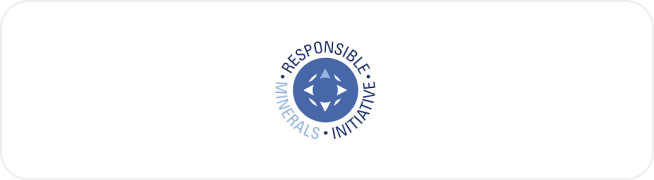
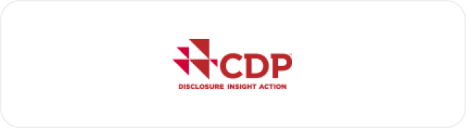
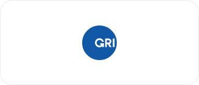
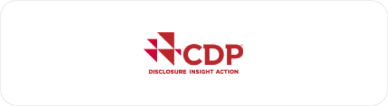
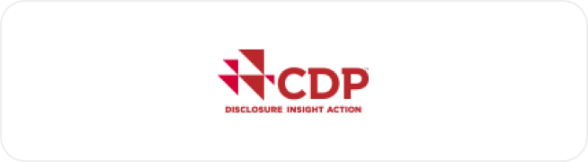

GLOBAL 100[Corporate Knights 주관], 2022년 63위 기록, 6년 연속선정
CLEAN 200[Corporate Knights 주관], 2022년 35위 기록, 4년 연속선정
EcoVadis,2022 Platinum
KCGS[한국기업지배구조원 주관], 2021년 통합등급 A, 환경 A, 사회 A+, 지배구조 B+
SUSTINVEST, 2022년 종합등급 A
MSCI(Morgan Stanley Capital International) 주관
S&P Dow Jones, RobecoSAM 주관
CDP(Carbon Disclosure Project) 주관
, 5) Corporate Knights 주관
한국ESG기준원 주관
글로벌 이니셔티브 참여 현황
세계 각국의 정책에 발맞춰, 삼성SDI는 글로벌 이니셔티브에 자발적으로 참여하며 ESG 관련 지표를 투명하게 공개하고 있습니다.
UNGC
기업의 사회적 책임을 강화하고자 발족한 국제협약인 UNGC(United Nations Global Compact)에
2022년 7월 가입했습니다. 삼성SDI는 인권, 노동, 환경과 반부패에 관한 원칙인 UNGC 10대 원칙을 따르며
나아가 브랜드 가치 및 조직 경쟁력을 높이겠습니다.
RE100
삼성SDI는 RE100(Renewable Energy 100%)에 가입했습니다. 2050년까지 단계적으로,
국내외 전 사업장에서 100% 재생에너지 사용을 추진하겠습니다.
K-EV100
K-EV100은 환경부에서 추진하는 캠페인으로, 기업이 보유하거나 임차해 운행하는 차량을 무공해차로
전환하는 것을 목표로 합니다. 삼성SDI는 2021년 K-EV100에 가입했고, 2030년까지 보유 또는 임차한
업무용 차량을 100% 전기 차량으로 전환할 예정입니다.
RMI

2020년 광물 조달 관행 개선을 위한 국제사회 공동의 노력에 동참하려고 RMI(Responsible Minerals
Initiative)에 가입했습니다. 이를 통해 공급망 실사 개선 활동을 적극 추진하고 있습니다.
Cobalt for Development
2019년 삼성전자, BMW, 바스프(BASF)와 함께 '지속 가능한 코발트 채굴을 위한 산업간 협력 프로젝트(Cobalt
for Development)'에 참여해 콩고 코발트 광산의 근로 환경 및 지역사회 개선 활동을 전개하고 있습니다.
Ban on Deep Seabed Mining Initiative
2021년 3월, 배터리 업계 최초로 BMW, 볼보(Volvo), 구글(Google) 등과 함께 '심해저 광물 채굴 방지
이니셔티브(DSM)'에 참여해 해양 생태계 보호에 앞장서고 있습니다.
CDP 평가

투자자의 기후 위기 정보 공개 요구가 강해지면서, 삼성SDI는 CDP(Carbon Disclosure Project)로
기후 위기 전략 및 온실가스 저감 현황을 투명하게 공개하고 있습니다.
GRI 글로벌 보고 이니셔티브

기업의 지속가능경영보고서에 대한 기준을 제시하는 비영리 기구인 GRI(Global Reporting Initiative)에서
개발한 지속 가능성 보고 표준(GRI Standards)에 따라 지속가능경영보고서를 발간하고 있습니다.
TCFD 기후변화 재무 정보공개 태스크 포스
기후변화가 미치는 기업의 재무적 영향 공개를 위한 프레임워크인 TCFD(Task Force on Climate-related
Financial Disclosure) 기준을 반영한 지속 가능성 정보를 지속가능경영보고서에 공개했습니다.
SASB 지속 가능성 회계기준 위원회
삼성SDI는 SASB(Sustainability Accounting Standards Board) 산업 표준에 근거해
지속 가능성 이슈를 분석 및 선정하고 있습니다.
국제 인증 취득
삼성SDI는 글로벌 기준의 품질경영시스템(ISO9001)을 운영하고 있으며, 이를 위해 다양한 IT 시스템과 데이터 분석 기법을 도입하고 있습니다.
또한 국제 표준 규격인 ISO14001과 ISO45001을 기반으로 안전환경 경영시스템을 운영하며, 이를 통해 법규를 준수하고 리스크 발굴, 건강관리, 화학물질 사용량,
KPI 등을 관리하고 있습니다. 에너지 경영시스템 국제 규격인 ISO50001 인증을 2011년 9월 처음 취득한 이래로 지속해서 에너지 사용을 최소화하며, 기업 활동의
모든 영역에서 에너지 경영을 실천하고 있습니다.


 
